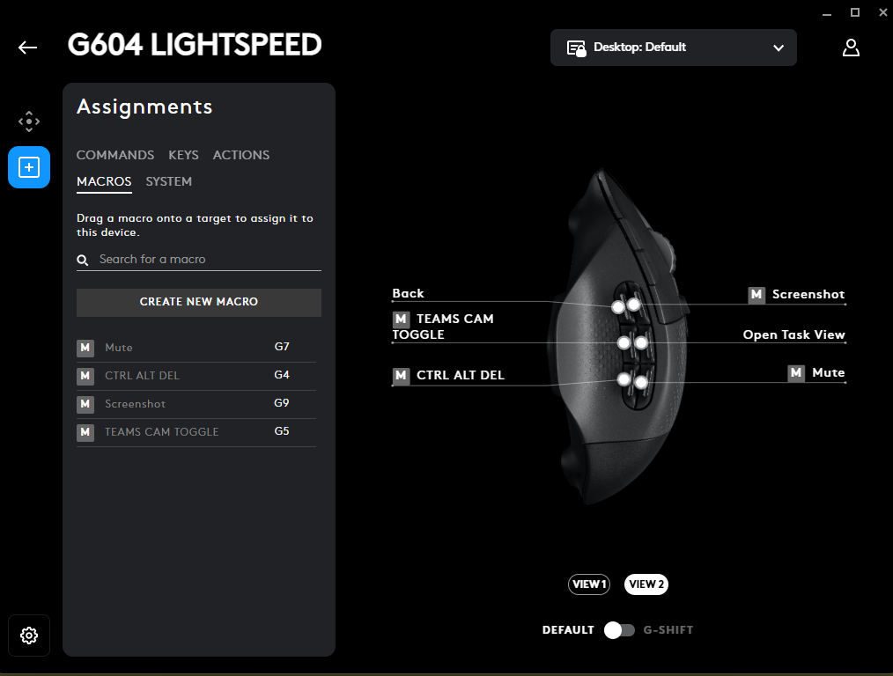
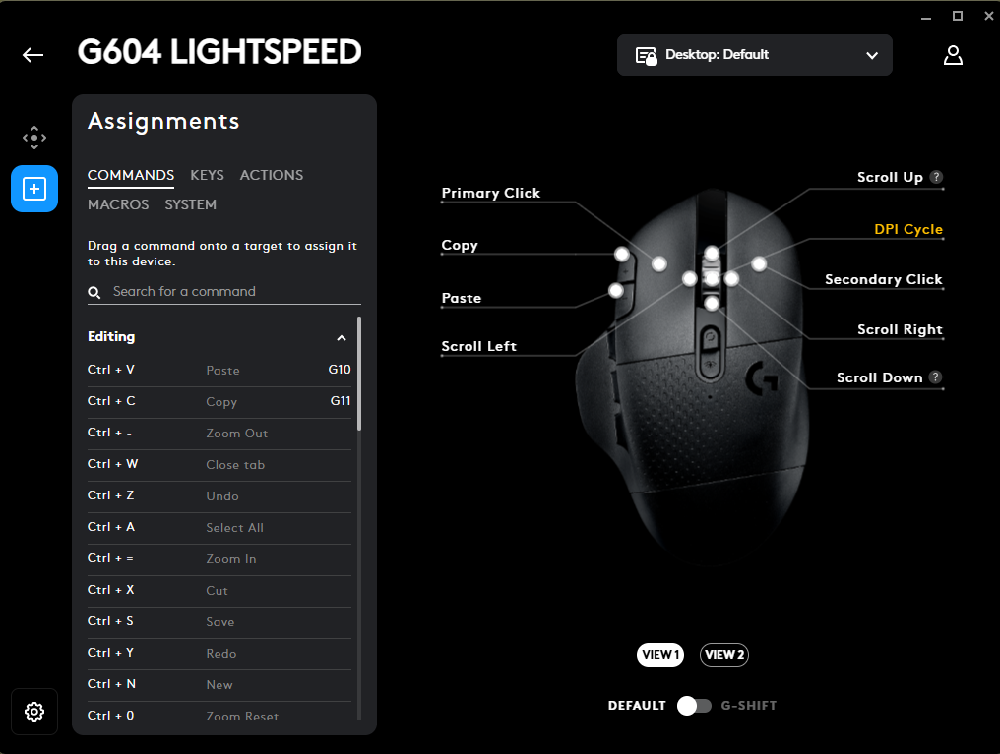
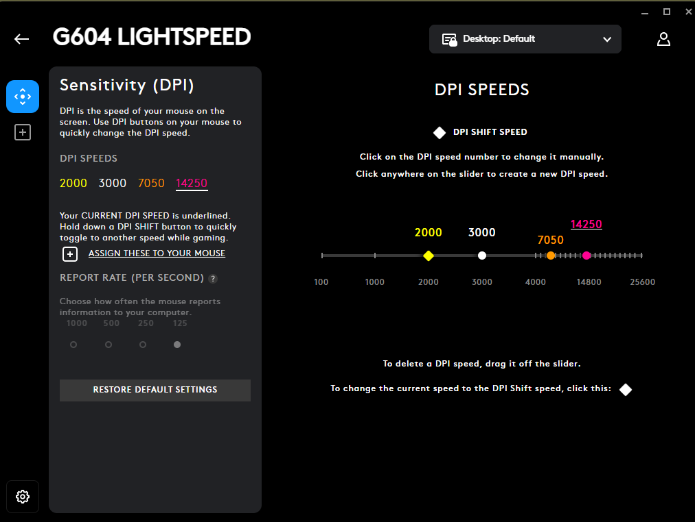
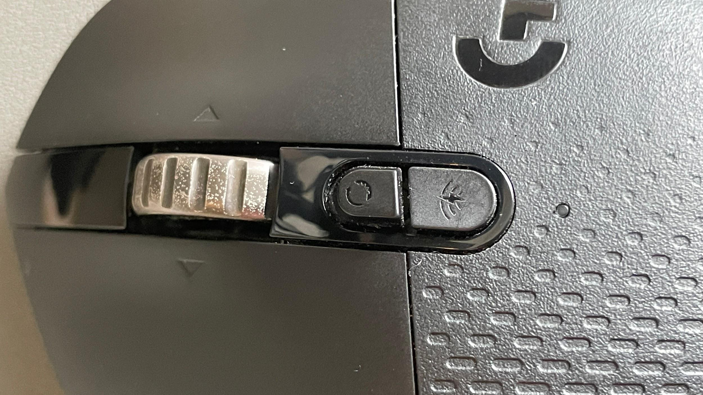
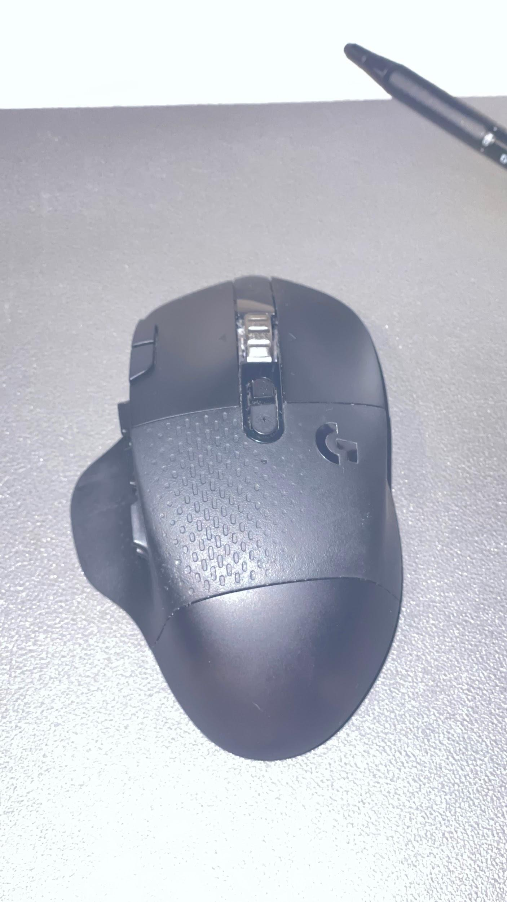
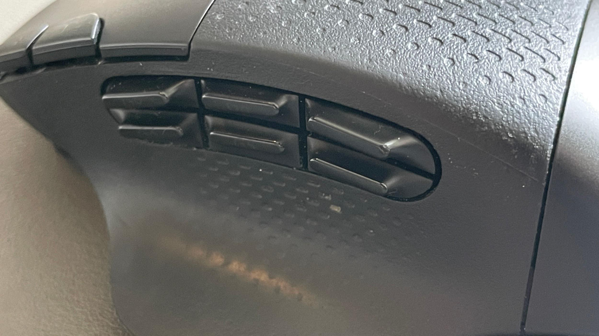
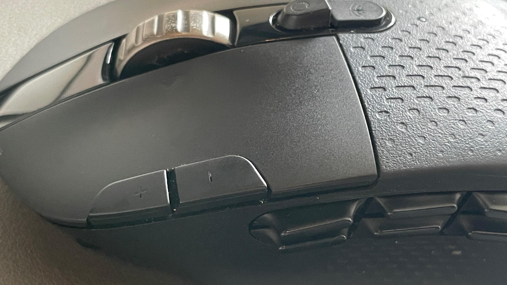

Every once in a while, a product comes along that becomes more than the sum of its parts. It finds a niche that nobody else seems interested in serving, builds a loyal following, and quietly becomes indispensable to the people who use it. The Logitech G604 LIGHTSPEED is one of those products.
The frustrating part is that Logitech discontinued it.
Years later, people are still hunting them down on the used market, often paying prices that make absolutely no sense for a mouse that originally retailed for around $100. That alone should tell Logitech something important: the G604 wasn't just another gaming mouse. It filled a gap that still exists today.
Ironically, I think Logitech marketed it to the wrong audience.
The Mouse Logitech Accidentally Built for Productivity
The G604 was sold as a gaming mouse, specifically targeting MMO players who wanted access to multiple programmable buttons. While it certainly excelled in that role, its greatest strength was something entirely different.
This is one of the best productivity mice ever made.
The combination of six thumb buttons, multiple top-mounted controls, dual wireless connectivity, customizable DPI settings, application-specific profiles, and Logitech's phenomenal infinite scroll wheel created a workflow tool unlike anything else currently available. While many productivity-focused mice sacrifice customization for simplicity, the G604 embraced both. It's the kind of peripheral that makes you rethink the whole desk, I went through a similar process when I upgraded to the Edifier M60 speakers and realized how much the right hardware changes daily workflow.
The Productivity Features Logitech Overlooked
One of the reasons Logitech missed the mark when marketing the G604 is that they focused almost entirely on gaming. This mouse has spent far more time in spreadsheets, web browsers, content management systems, photo editing software, and Teams meetings than it ever has in a game.
The programmable buttons have become so integrated into my daily workflow that I genuinely struggle when I have to use another mouse.
Having copy and paste mapped directly to thumb buttons sounds like a small convenience until you've used it for eight hours a day. The same goes for screenshot shortcuts and microphone muting. If you've ever been on a Teams call and needed to mute yourself immediately while reaching for the keyboard or hunting for the on-screen button, you understand how valuable a dedicated mute button can be. These aren't flashy features. They're practical improvements that save time dozens, if not hundreds, of times throughout the workweek.


High DPI, Less Movement, Less Fatigue
The G604 allows full DPI customization with multiple saved speed levels. Running a higher DPI means even subtle wrist movements translate into significant cursor movement across multiple monitors. Instead of dragging your arm all over the desk throughout the day, you can navigate with minimal effort.
For someone who spends hours each day at a computer, that reduction in movement becomes surprisingly noticeable. Your wrist stays planted, movements stay controlled, and you're not constantly reaching across the workspace just to move the cursor from one display to another. It's a small detail that contributes significantly to long-term comfort.

The Infinite Scroll Wheel Is Worth the Price of Admission
If there is one feature worth calling out above everything else, it's Logitech's infinite scroll wheel. Anyone who spends their day reviewing documentation, reading articles, scrolling through spreadsheets, or navigating lengthy reports understands its value almost immediately.
The ability to unlock the wheel and flick through hundreds of lines of content feels effortless. Once you've experienced it, going back to a traditional scroll wheel feels like stepping backward. Logitech continues to execute this better than almost anyone else.

Application-Specific Profiles Change Everything
What elevates the G604 from a great mouse to an exceptional productivity tool is the ability to create application-specific button profiles. The same thumb button can perform one function in Chrome, another in Photoshop, another in Excel, and something entirely different in Teams.
Imagine opening a spreadsheet and having your shortcuts automatically optimized for spreadsheet work. Then switching to photo editing software and having every button instantly remapped to the functions you use most frequently there. No manual profile switching. No extra steps. It just works.
This is where the G604 stops feeling like a peripheral and starts feeling like an extension of your workflow. The mouse adapts to the task instead of forcing you to adapt to it. Combined with a keyboard that can do the same, I've been running the Keychron K5 Max alongside it and the whole desk becomes something you've genuinely tuned to how you work.

The Hardware in Detail


It's Not Perfect
No review would be complete without acknowledging the shortcomings. The G604 is larger and heavier than many modern gaming mice. Competitive FPS players looking for the lightest possible setup will find it cumbersome. The shape won't work equally well for every hand size, and Logitech's G Hub software can occasionally be frustrating.
But those tradeoffs make sense when viewed through the lens of productivity rather than gaming. The extra weight contributes to stability. The larger size allows for more controls. The AA battery design delivers exceptional battery life. In many ways, the features that gamers criticized are the same features that productivity users appreciated.
Why Logitech Needs to Bring It Back
The strongest argument for reviving the G604 isn't nostalgia. It's demand. When a discontinued mouse continues commanding premium prices years after production ends, that's not an accident. That's a signal.
People are still looking for this mouse because Logitech never truly replaced it. The MX series offers excellent productivity features but lacks the extensive button customization. MMO gaming mice often provide plenty of buttons but sacrifice battery life, ergonomics, or practical office functionality. The G604 sat perfectly in the middle, enough buttons to dramatically improve workflow without turning into a giant keypad attached to your hand.
Logitech doesn't need to bring back the G604 exactly as it was. Update the sensor. Improve the switches. Refine the software. Modernize the charging system if you want. But recognize what made this mouse special.
The people still searching for G604s in 2026 aren't chasing nostalgia. They're professionals, creators, programmers, analysts, content producers, and power users who discovered a tool that genuinely made them more efficient every day. The G604 wasn't simply a gaming mouse with extra buttons. It was one of the most effective productivity tools Logitech has ever created. And until something truly replaces it, many of us will continue asking for its return.
What It Costs Now
I paid around $90 for my G604 in 2020. That felt like fair value for a well-specced wireless gaming mouse. What's happened to the price since discontinuation is something else entirely.
Third-party sellers on Amazon are currently listing the G604 at around $290 roughly 3.5 times what I paid. eBay tells the same story: used units in good condition are moving at prices that would have seemed absurd for a peripheral just a few years ago. New-in-box listings command even more.
This isn't a niche collector's item with artificial scarcity. It's a productivity mouse that people use daily, and the market has responded to a real gap in supply. The desk setup community has driven part of this, the G604 has become something of a cult object among people who take their workstation seriously. But gamers are in the mix too, particularly MMO players who haven't found anything that replicates the button layout and battery life combination.
The demand is organic. Nobody is speculating on Logitech mice. People are paying 3.5x because they want the mouse and there's nothing comparable to buy instead.
Whether that price is worth it depends entirely on how much you use a mouse. For someone who lives at a desk, the math is different than it looks. For casual users, it's hard to justify. But the fact that the market has sustained these prices for years is the clearest possible signal that Logitech left money on the table when they discontinued it.
Logitech built something genuinely great with the G604, then walked away from it. The infinite scroll wheel, six-button thumb cluster, and application-specific profiles combined into a productivity tool that still has no real equivalent. The resale market, currently sitting around $290 for a mouse that launched at $100, says everything about the gap it left. If you find one at a reasonable price, buy it without hesitation.